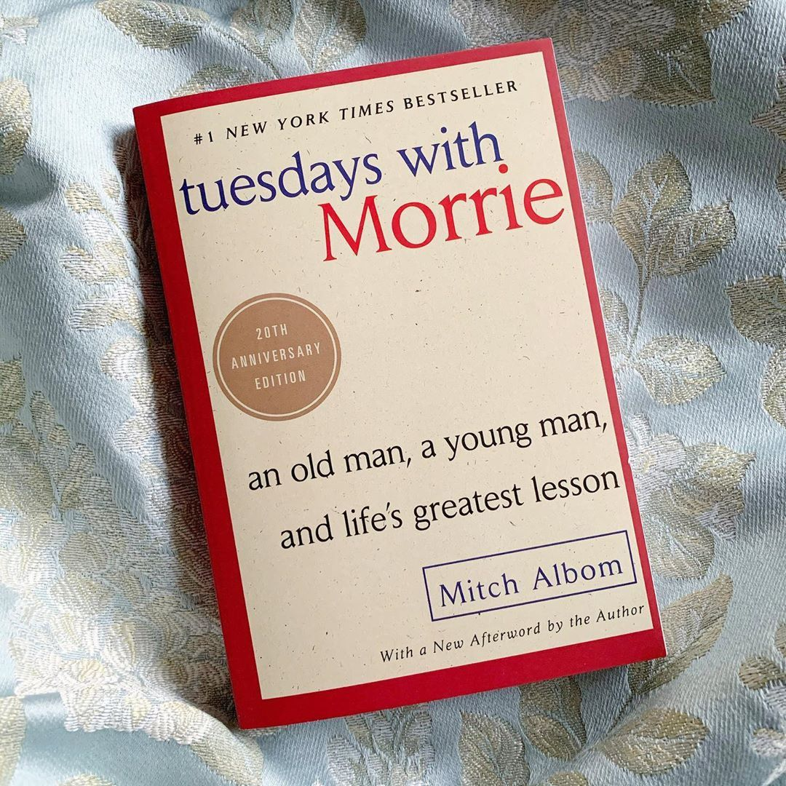
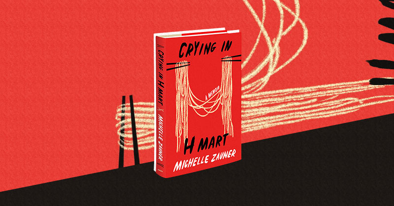
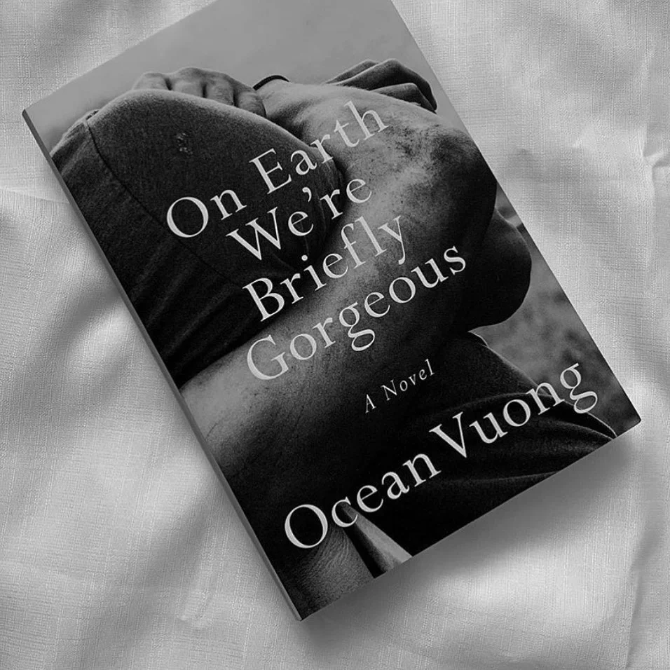
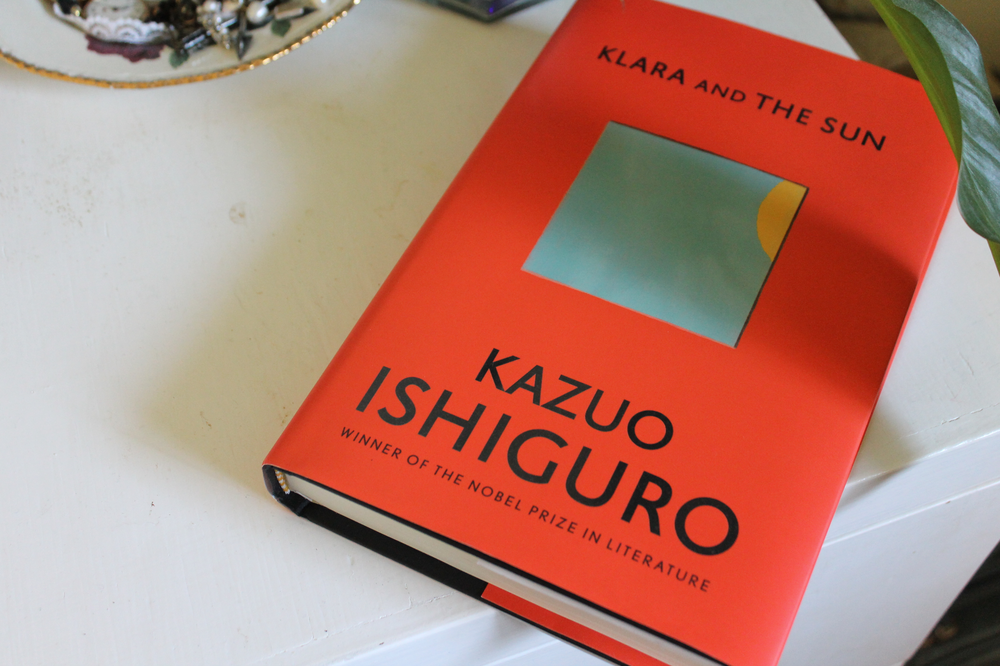

I first read this book when I was 12 years old and
it has stayed as my top favorite book to this day. I love the small
life lessons that the main character gives to the author, which the
author ultimately gives to the reader.
"As long as we can love each other, and remember the feeling of
the love we had, we can die without ever really going away."

This book is one of my most recent reads and I love it so much! The
author dives deep into her relationship with her mother, as well
as the her own grief in her mother's battle with cancer and eventual death.
"No one in this world would ever love me as much as my mother, and
she would never let me forget it."

This book is a love letter from the son of a mother who is illiterate.
The author is very introspective of his childhood, which taught me how to
be more introspective myself.
"They say nothing lasts forever but they're just scared it will
last longer than they can love it."

I read this book for literature class in my senior year of high school,
and it was my first time experiencing indulging in a literary classic!
"Four legs good, two legs bad."

This was the book that got my out of my 3-year book slump and I loved
this one! It's set in a dystopian parallel universe where children often
have their own AI robot companion. Our main character, Klara, is an AI companion to
a girl that is chronically ill, where she learns about the meaning of living.
"Sometimes," she said, "at special moments like that,
people feel a pain alongside their happiness.
I’m glad you watch everything so carefully, Klara.”